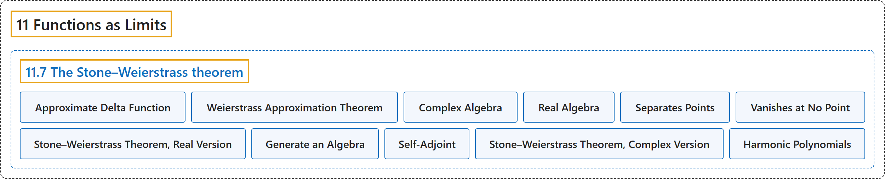

11.7 The Stone–Weierstrass theorem
Classification

Glossary
| Term | Definition | 中文翻译 | Source |
|---|---|---|---|
| 11.7 The Stone–Weierstrass theorem 斯通–魏尔斯特拉斯定理 |
(No definition) | （无定义） | Lebl, 2026, section 11.7 |
| Approximate Delta Function 近似 δ 函数 |
"The idea of the proof is a very common approximation or “smoothing” idea (convolution with an approximate delta function) that has applications far beyond pure mathematics." | 证明的思路是一种非常常见的逼近或“光滑化”思想（与近似 δ 函数作卷积），它的应用远远超出纯粹数学。 | Lebl, 2026, section 11.7 |
| Weierstrass Approximation Theorem 魏尔斯特拉斯逼近定理 |
"If \(f \colon [a,b] \to \mathbb{C}\) is continuous, then there exists a sequence \(\{ p_n \}_{n=1}^\infty\) of polynomials converging to \(f\) uniformly on \([a,b]\). Furthermore, if \(f\) is real-valued, we can find \(p_n\) with real coefficients." | 若 \(f \colon [a,b] \to \mathbb{C}\) 连续，则存在在 \([a,b]\) 上一致收敛到 \(f\) 的多项式序列 \(\{ p_n \}_{n=1}^\infty\)。此外，若 \(f\) 是实值的，可以取实系数的 \(p_n\)。 | Lebl, 2026, Theorem 11.7.1 |
| Complex Algebra 复代数 |
"A set \(\mathcal{A}\) of complex-valued functions \(f \colon X \to \mathbb{C}\) is said to be an algebra (sometimes complex algebra or algebra over \(\mathbb{C}\)) if for all \(f, g \in \mathcal{A}\) and \(c \in \mathbb{C}\), we have \(f+g \in \mathcal{A}\). \(fg \in \mathcal{A}\). \(cg \in \mathcal{A}\)." | 若对所有 \(f, g \in \mathcal{A}\) 和 \(c \in \mathbb{C}\)，有 \(f+g \in \mathcal{A}\)、\(fg \in \mathcal{A}\)、\(cg \in \mathcal{A}\)，则复值函数 \(f \colon X \to \mathbb{C}\) 的集合 \(\mathcal{A}\) 称为代数（有时称为复代数或 \(\mathbb{C}\) 上的代数）。 | Lebl, 2026, Definition 11.7.5 |
| Real Algebra 实代数 |
"A real algebra or an algebra over \(\mathbb{R}\) is a set of real-valued functions that satisfies the three properties above for \(c \in \mathbb{R}\)." | 实代数或 \(\mathbb{R}\) 上的代数是对 \(c \in \mathbb{R}\) 满足上述三条性质的实值函数集合。 | Lebl, 2026, Definition 11.7.5 |
| Separates Points 分离点 |
"Let \(\mathcal{A}\) be a set of complex-valued functions defined on a set \(X\). \(\mathcal{A}\) separates points if for every \(x,y \in X\) with \(x \neq y\), there is an \(f \in \mathcal{A}\) such that \(f(x) \neq f(y)\)." | 设 \(\mathcal{A}\) 是定义在集合 \(X\) 上的复值函数的集合。若对每对 \(x \neq y\) 的 \(x,y \in X\)，存在 \(f \in \mathcal{A}\) 使得 \(f(x) \neq f(y)\)，则称 \(\mathcal{A}\) 分离点。 | Lebl, 2026, Definition 11.7.7 |
| Vanishes at No Point 处处不为零 |
"\(\mathcal{A}\) vanishes at no point if for every \(x \in X\) there is an \(f \in \mathcal{A}\) such that \(f(x) \neq 0\)." | 若对每个 \(x \in X\)，存在 \(f \in \mathcal{A}\) 使得 \(f(x) \neq 0\)，则称 \(\mathcal{A}\) 处处不为零。 | Lebl, 2026, Definition 11.7.7 |
| Stone–Weierstrass Theorem, Real Version 斯通–魏尔斯特拉斯定理（实版本） |
"Let \(X\) be a compact metric space and \(\mathcal{A}\) a real algebra of real-valued continuous functions on \(X\), such that \(\mathcal{A}\) separates points and vanishes at no point. Then the closure \(\overline{\mathcal{A}} = C(X,\mathbb{R})\)." | 设 \(X\) 是紧度量空间，\(\mathcal{A}\) 是 \(X\) 上实值连续函数构成的实代数，且 \(\mathcal{A}\) 分离点、处处不为零，则闭包 \(\overline{\mathcal{A}} = C(X,\mathbb{R})\)。 | Lebl, 2026, Theorem 11.7.12 |
| Generate an Algebra 生成代数 |
"In general, given a set of functions that separates points and does not vanish at any point, we let these functions generate an algebra by considering all the linear combinations of arbitrary multiples of such functions." | 一般地，给定一组分离点且处处不为零的函数，通过考虑这些函数的任意乘积的全部线性组合，让它们生成一个代数。 | Lebl, 2026, section 11.7 |
| Self-Adjoint 自伴 |
"An algebra \(\mathcal{A}\) is self-adjoint if for all \(f \in \mathcal{A}\), the function \(\bar{f}\) defined by \(\bar{f}(x) := \overline{f(x)}\) is in \(\mathcal{A}\), where by the bar we mean the complex conjugate." | 若对所有 \(f \in \mathcal{A}\)，由 \(\bar{f}(x) := \overline{f(x)}\) 定义的函数 \(\bar{f}\) 也属于 \(\mathcal{A}\)（横线表示复共轭），则称代数 \(\mathcal{A}\) 自伴。 | Lebl, 2026, Definition 11.7.15 |
| Stone–Weierstrass Theorem, Complex Version 斯通–魏尔斯特拉斯定理（复版本） |
"Let \(X\) be a compact metric space and \(\mathcal{A}\) an algebra of complex-valued continuous functions on \(X\), such that \(\mathcal{A}\) separates points, vanishes at no point, and is self-adjoint. Then the closure \(\overline{\mathcal{A}} = C(X,\mathbb{C})\)." | 设 \(X\) 是紧度量空间，\(\mathcal{A}\) 是 \(X\) 上复值连续函数构成的代数，且 \(\mathcal{A}\) 分离点、处处不为零并且自伴，则闭包 \(\overline{\mathcal{A}} = C(X,\mathbb{C})\)。 | Lebl, 2026, Theorem 11.7.16 |
| Harmonic Polynomials 调和多项式 |
"Show that functions of the form \(c_0 + \sum_{k=1}^n c_k \, z^k + \sum_{k=1}^n c_{-k}\, \bar{z}^k\) are dense in \(C(S^1,\mathbb{C})\). These functions are called harmonic polynomials." | 证明形如 \(c_0 + \sum_{k=1}^n c_k \, z^k + \sum_{k=1}^n c_{-k}\, \bar{z}^k\) 的函数在 \(C(S^1,\mathbb{C})\) 中稠密。这些函数称为调和多项式。 | Lebl, 2026, Exercise 11.7.7 |
References
Lebl, J. (2026). Basic analysis I & II: Introduction to real analysis (May 22, 2026 edition). Retrieved October 29, 2026, from https://www.jirka.org/ra/html/